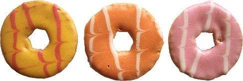

Party Rings have been bringing fun to kids parties, biscuit tins, and a few lucky lunchboxes for more than 30 years. And today, every day really can be a party; they’re colourful enough to brighten up the dullest day.
Did you know?... There are over 32 million Google results for "homemade party rings"!
| Main Flavour | Sugar Biscuit |
| Filling? | No |
| Best Paired With | Milk |
| Price Point | $$ |
| Suitable for Vegetarians? | Yes! |